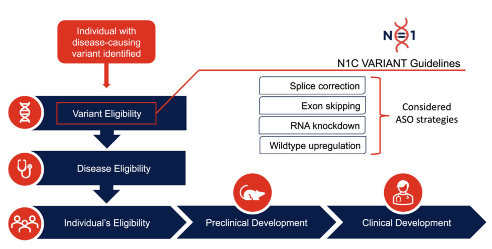

Actionability Assessments - Consensus Frameworks

As emerging genetic therapies become increasingly feasible, there is a growing need for systematic approaches to determine which genetic variants may be amenable to different therapeutic modalities. Our work focuses on developing consensus frameworks and therapeutic eligibility assessments that enable consistent and transparent evaluation of potential genetic therapy targets.
Together with the N=1 Collaborative, we have recently established consenus frameworks for assessing pathogenic DNA variants for antisense oligonucleotide therapies. We are now working on similar guidelines for gene editing and gene replacement approaches.